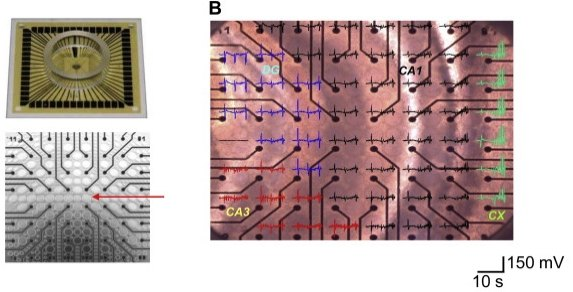

Non-invasive photobiomodulation for prevention-oriented neurology.
The lab develops repetitive transcranial photobiomodulation (PBM) protocols to test whether light-based, non-invasive stimulation can reduce pathological activity before chronic disease progression is established.
Across epilepsy and Alzheimer's disease models with epileptiform activity, this work measures short-term electrophysiological endpoints, including interictal spikes, seizures, spike-ripple events, and high-frequency oscillations, alongside longer-term memory and disease-progression outcomes.
Representative publications
You et al. Preventive effects of transcranial photobiomodulation on epileptogenesis in a kainic acid-induced rat epilepsy model. Experimental Neurology, 2025.
Kang et al. Site- and EEG-frequency-specific effects of 800-nm prefrontal PBM on EEG global network topology. Neurophotonics, 2025.
Wang et al. Photobiomodulation as a potential treatment for Alzheimer's disease. Brain Sciences, 2024.
You et al. Preclinical studies of transcranial photobiomodulation in neurological diseases. Translational Biophotonics, 2020.

